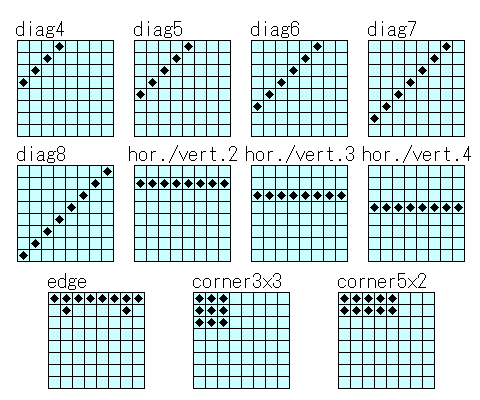

| 課題と改善点 |
本解説では説明しきれなかったこと、今後の改善点について説明します。
本解説では、評価に比較的少ないマスで構成されるパターンを使用しました。
多くのリバーシプログラムでは、より多いマスで構成されるパターンを使用することが多いです。
例えばLogistelloでは、以下のパターンを使用しています。

ただし、単純にマスの数を多くすればよいというものではありません。
マスの数が多くなれば、それだけ学習させなければならないパターンの数が増えます。
そのため学習にかかる時間が長くなってしまいます。
より強いリバーシプログラムを作成するためにどのようなパターンが適切かを考えてみるのもよいでしょう。
ゲームの段階とは、局面がどれだけ進んでいるかを表す言葉です。
リバーシでは、単純に現在何手目かで表すことが多いです。
一般に、パターンの評価値は序盤、中盤、終盤によって変わると考えられます。
そのため、ゲームの段階に応じて評価パラメータを使い分けると、より精度の高い評価を行なうことができます。
強いプログラムでは、１局を十数段階に分けて、それぞれ評価パラメータを用意しています。
本プログラムで使用した置換表では、古いデータを新しいデータで上書きしていました。
これでは、置換表が頻繁に書き変わる場合には置換表を有効利用できなくなります。
１つのインデックスに対して複数のデータを登録するようにしたり、古いデータを消去する条件を変更する等の置換表の改良を行ってみるとよいでしょう。
本解説では探索アルゴリズムにαβ法を使用しましたが、他にも探索アルゴリズム（多くはαβ法の改良ですが）が考案されています。
それらのアルゴリズムを導入してみるとより効率のよい探索を行なえると思います。
どのような探索アルゴリズムがあるかについては各自探してみてください。
多くの定石を使用できるようにすると、それだけ序盤が安定すると考えられます。
また自動的に定石の学習を行なえるようにしてみるのもよいでしょう。
ただし、本解説の定石クラスでは定石データの検索に線形探索を使用しているため、大量データの検索を高速に行なえません。
大量データの検索を行なえるように、定石データのデータ構造を改良することが必要です。
本解説で記述したプログラムは、強いプログラムと比較すると探索速度がはるかに遅いです。
ここでの探索速度とは、１秒あたりの探索ノード数を指します。
探索速度を向上させるために、着手アルゴリズムを工夫してみるとよいと思います。
リバーシプログラムの中には、ソースコードが公開されているものもあります。
それらを参照すると、どのような工夫を行なっているのか参考になるでしょう。
またプロファイラ等を使用してどこの処理に時間がかかっているのかを調べてみるのもよいでしょう。
本解説では評価パラメータの学習にモンテカルロ法を使用しましたが、学習方法はこれだけではありません。
よくある手法としては、強いプレイヤ同士の棋譜から学習する方法があります。
Buro氏の論文に掲載されているので、興味のある方はご覧ください。
また細かい調整としては以下の点が挙げられます。